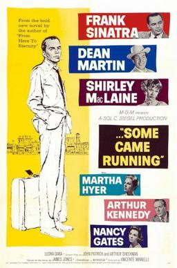

Some Came Running

Starring: Frank Sinatra, Dean Martin, Shirley MacLaine
Director: Vincente Minnelli
Writer: James Jones, John Patrick
Producer: Sol C. Siegel
Some Came Running is a 1958 American drama film directed by Vincente Minnelli and starring Frank Sinatra, Dean Martin and Shirley MacLaine, based on the 1958 novel of the same name by James Jones. Set in 1948, it tells the story of a troubled army veteran and author who returns to his Midwestern home town after 16 years, to the chagrin of his wealthy, social-climbing brother.
Trivia
- Nominated for: Academy Award for Best Supporting Actress; Academy Award for Best Supporting Actor; Academy Award for Best Actress; Academy Award for Best Costume Design.
- Based on Some Came Running (1957 novel by James Jones).
- Shirley MacLaine reported that Frank Sinatra was "besieged" by the local Indiana women, and that at one point a woman broke through a rope barrier around a house and flung herself at Sinatra as her husband ran to stop her, pleading "Helen, you don't even know the man!".
Previous Showings
3 Runs • 3 Festivals
All runs on record (3):
- May 27 - 30, 2006Ronald Colmanw/ Lady Windermere's Fan, Home from the Hill
- June 6 - 7, 2013The 1950sw/ Bus Stop
- August 22 - 25, 2024Directed by Vincente Minnelliw/ Bells Are Ringing